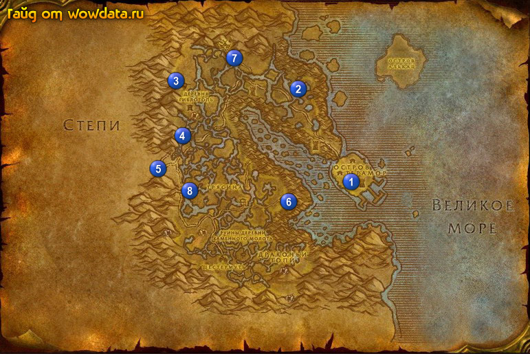

1) У стражника около гостиницы начните <Зовут его Улыбка Джим>.
2) Войдите в гостиницу, начните <Суп из илистой черепахи с жучками> и сделайте вашим домом.
3) Идите в замок рядом с гостиницей на 2 этаж и закончите <Зовут его Улыбка Джим>.
4) Пройдите в дом 1 (66, 51) и купите 3 [Ароматные специи] для будущих квестов.
5) Как только выйдите из города, идите направо и бейте Глинистая колючая черепаха по всем пляжу для <Суп из илистой черепахи с жучками>.
6) Идите в дом 2 (55, 26) и начните <Ярлу нужны глаза>.
7) Раскопайте кучу грязи слева от дома и начните <Орочье донесение>.
8) Идите в пещеру 3 (32, 23) и убивайте пауков внутри и снаружи пещеры для <Ярлу нужны глаза>.
9) Начните <Моя голодный!> 4 (35, 38).
10) Начните 3 квеста у сгоревшего дома 5 (29, 47): <Подозрительные следы копыт> - начинают следы, <Лейтенант Павал Рит> - маленький значок на обгоревшей доске, и <Черный Щит> - щит весит над камином.
11) Откройте Упаковочный ящик Гизмориума 6 (54, 56) для <Настройки Раззерика>.
12) По руне вернитесь в .
13) Как прилетите, тут же в гостинице закончите <Суп из илистой черепахи с жучками>, начните
<…и жуки.>.
14) Выйдите наружу, около выхода из города закончите <Орочье донесение> и начните <Капитан Ваймс>, бегите в замок около гостиницы и закончите этот квест.
15) Тут же в замке закончите <Лейтенант Павал Рит> и начните <Лейтенант Павал Рит>.
16) Закончите <Черный Щит>, начните <Черный Щит>.
17) Закончите <Подозрительные следы копыт>.
18) Развернитесь и закончите <Лейтенант Павал Рит>, начните <Солдаты Даэлина>.
19) Развернитесь и закончите этот квест, начните <Дезертиры>.
20) Идите в кузницу и закончите там <Черный Щит>, начните <Черный Щит> и идите закончите его обратно в замок.
21) Бегите из города к дому 2 (55, 26) и закончите <Ярлу нужны глаза>, игнорируйте следующую часть.
22) Идите отсюда на северо-восток и бейте мурлоков для <Моя голодный!>.
23) Бейте рапторов 7 (46, 17) пока у вас не будет 50% на 39 лвл, затем начните <Спасение Вонючки> и убивайте всех кто его атакует. Правда просто? =)
24) Закончите <Моя голодный!> 4 (35, 38).
25) Идите в башню 8 (35, 53) и атакуйте Балос Хакен, когда у него останется мало жизни, он станет дружелюбным, тогда закончите у него <Дезертиры> и начните <Дезертиры>.
26) Умрите и воскресните на кладбище около .
27) В гостинице закончите <Спасение Вонючки>.
28) На 2 этаже замка закончите <Дезертиры>.
29) Летите в Прибамбасск и бегите в Мерцающая равнина, закончите <Настройки Раззерика>, начните <Безопасность превыше всего>. Закончите этот квест в Прибамбасск и начните
<Безопасность превыше всего>, затем бегите назад в Мерцающая равнина и закончите его.
30) Вернитесь по руне в и летите в Кабестан, затем сядьте на корабль в Пиратская бухта .